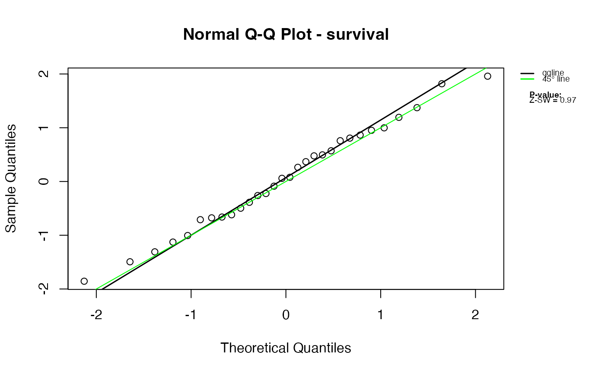
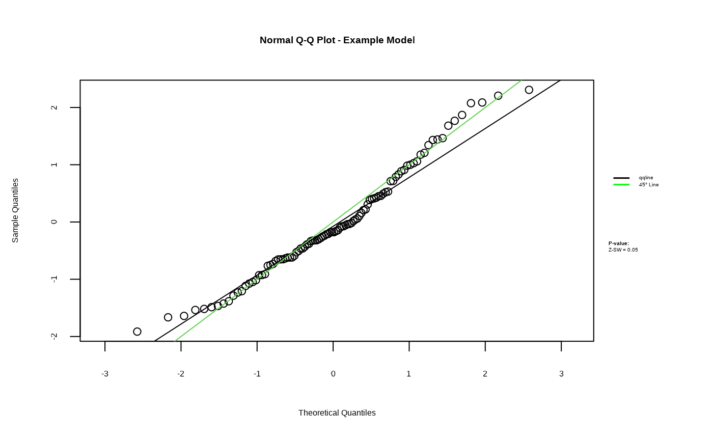
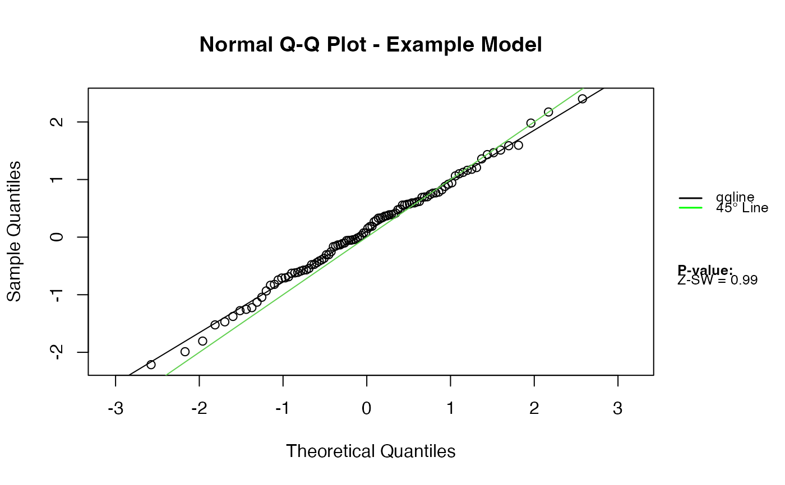

Normal Q-Q Plot for Z-Residuals with Outlier Detection and Normality Diagnostics
Source:R/qqnorm.zresid.R
qqnorm.zresid.RdProduces a normal Q-Q plot for Z-residuals, with optional Shapiro–Wilk normality testing, automatic handling of infinite and extreme values, axis breaks for very large residuals, and visual annotation of detected outliers. This diagnostic is designed for checking the normality assumption of Z-residuals obtained from Bayesian predictive model checks (posterior, LOOCV, ISCV, etc.).
Usage
# S3 method for class 'zresid'
qqnorm(
y,
irep = 1,
diagnosis.test = "SW",
main.title = ifelse(is.null(attr(y, "type")), "Normal Q-Q Plot",
paste("Normal Q-Q Plot -", attr(y, "type"))),
xlab = "Theoretical Quantiles",
ylab = "Sample Quantiles",
outlier.return = TRUE,
outlier.value = 3.5,
outlier.set = list(),
my.mar = c(5, 4, 4, 6) + 0.1,
legend.settings = list(),
...
)Arguments
- y
A numeric matrix of Z-residuals where each column corresponds to an iteration or predictive draw. The function also uses the attribute
"type"(optional model name) to construct default titles.- irep
Integer or vector of integers indicating which column(s) of
Zresidualto plot. Defaults to1.- diagnosis.test
Character string indicating the normality test to perform. Currently only
"SW"(Shapiro–Wilk test; usingsw.test.zresid()) is supported.- main.title
Main title of the plot. If missing, it is automatically constructed using the
"type"attribute ofZresidual.- xlab, ylab
Axis labels for the Q-Q plot.
- outlier.return
Logical; if
TRUE, the function prints and returns the indices of detected outliers.- outlier.value
Numeric threshold used to classify an observation as an outlier based on
|Zresidual| > outlier.value. Default is3.5.- outlier.set
Optional named list of graphical parameters passed to
symbolsandtextfor customizing the outlier annotation.- my.mar
Numeric vector giving margin sizes, passed internally to
par(mar = ...). Default isc(5, 4, 4, 6) + 0.1.- legend.settings
Optional named list of parameters to override default legend appearance settings.
- ...
Value
Invisibly returns a list with:
- outliers
An integer vector containing the indices of detected outliers.
If no outliers are detected, an empty integer vector is returned.
A Q-Q plot is produced as a side effect.
Details
This function extends the base R Q-Q plot to better handle typical behavior of Z-residuals in Bayesian predictive checking:
Infinite values (
Inf/-Inf) are replaced with large finite values and trigger a warning.Very large Z-residuals (
|Z| > 6) are shown using axis breaks to avoid plot distortion.Outliers (
|Z| > outlier.value) are highlighted and labeled.Column-wise Shapiro–Wilk tests assess normality.
Legends summarize model type, selected Q-Q lines, and diagnostic results.
This diagnostic is suitable for Z-residuals such as randomized quantile residuals, posterior predictive Z-residuals, LOOCV/ISCV Z-residuals, and residuals from hurdle or zero-inflated Bayesian models.
References
Dunn, P. K., & Smyth, G. K. (1996). Randomized quantile residuals. Journal of Computational and Graphical Statistics, 5(3), 236–244.
Gelman, A., Carlin, J. B., Stern, H. S., Dunson, D. B., Vehtari, A., & Rubin, D. B. (2013). Bayesian Data Analysis. CRC Press.
Examples
library(Zresidual)
set.seed(1)
Z <- matrix(rnorm(200), ncol = 2)
attr(Z, "type") <- "Example Model"
# Basic Q-Q plot
qqnorm.zresid(Z)

# Use the second column with custom outlier threshold
qqnorm.zresid(Z, irep = 2, outlier.value = 2.5)

# Modify legend settings
qqnorm.zresid(Z, legend.settings = list(cex = 0.8))
